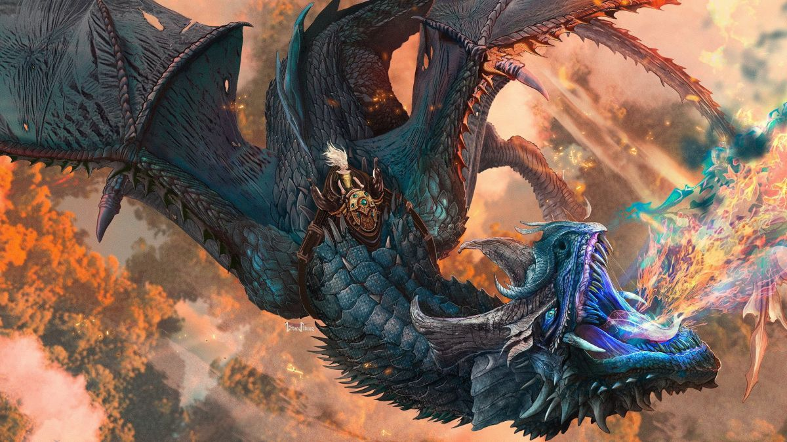
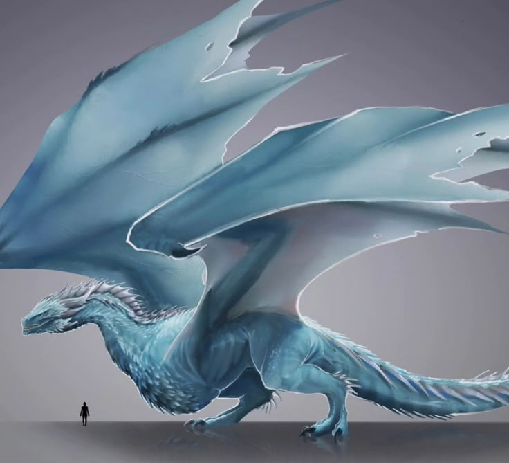

Dreamfyre foi uma dragão fêmea esguia e veloz, conhecida por suas escamas de um tom azul-claro celestial e belas
marcações prateadas nas asas.
Sua primeira montadora foi a Princesa Rhaena Targaryen, e a dragão se tornou famosa por ser uma das maiores
poedeiras da dinastia, gerando muitos dos ovos que viriam a chocar outros dragões icônicos.
Décadas mais tarde, Dreamfyre foi reivindicada pela Rainha Helaena Targaryen durante o período que antecedeu a
sangrenta Dança dos Dragões.
Seu fim foi um dos mais trágicos da história: aprisionada no Fosso dos Dragões em Porto Real, ela morreu
esmagada pelos escombros da grande cúpula após lutar bravamente contra uma multidão enfurecida de plebeus que
invadiu o local.


.jpg ) Dragão Anterior
Próximo Dragão
Voltar ao Menu
Dragão Anterior
Próximo Dragão
Voltar ao Menu